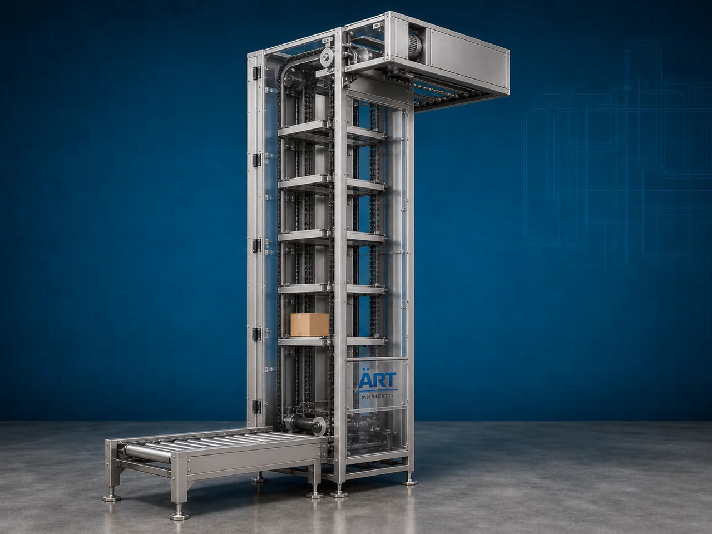

Vertical Conveyor Machine (Industrial Vertical Material Handling & Elevation System)
A Vertical Conveyor Machine, also known as an Industrial Vertical Conveyor or Vertical Material Handling System, is a highly efficient industrial equipment designed for lifting, elevating, transferring, and conveying products, boxes, bags, cartons, powders, granules, and bulk materials vertically between different heights or production levels with minimum floor space usage.

About the Vertical Conveyor
Vertical conveyor systems are widely used for:
- Multi-floor material transfer
- Product lifting
- Packaging line elevation
- Automated vertical transportation
- Warehouse material handling
- Production line integration
The machine improves:
- Factory space utilization
- Production automation
- Material transfer efficiency
- Workflow continuity
- Labor reduction
- Safe product movement
The conveyor operates using:
- Belt-driven lifting systems
- Bucket elevators
- Platform conveyors
- Chain-driven mechanisms
- Reciprocating vertical transfer systems
to transport materials efficiently in vertical direction.
Vertical conveyor machines are widely used in industries such as:
Food processing industries
Packaging industries
Pharmaceutical industries
Warehousing & logistics
Manufacturing industries
Grain processing plants
Chemical industries
Beverage industries
where continuous vertical product movement and compact plant layout are essential.
The machine is highly suitable for:
- Vertical product transfer
- Box and carton lifting
- Bulk material elevation
- Automated production systems
- Multi-level factory connectivity
- Space-saving material handling
ART Mechatronics offers high-performance vertical conveyor machines, engineered for continuous industrial operation, heavy-duty performance, compact installation, and reliable long-term conveying.
Working Principle of Vertical Conveyor Machine
Products, boxes, bags, cartons, or bulk materials are loaded at conveyor inlet point
Motor-driven belt, chain, bucket, or lifting system moves continuously
Material travels vertically upward or downward between levels
Machine transports:
- Boxes
- Cartons
- Bags
- Packets
- Granules
- Powders
- Industrial products efficiently across different elevations.
Vertical conveyor minimizes floor space requirement while maximizing height utilization
Conveyor integrates with: Packaging machines Production lines Warehouses Elevators Robotic systems Storage systems
Products discharged automatically at required transfer point or production level
Types of Vertical Conveyor Machines
- 1. Vertical Belt Conveyor
Uses: ✔ Belt-driven vertical transfer system for smooth product movement.
- 2. Vertical Reciprocating Conveyor (VRC)
Uses: ✔ Platform lifting mechanism for heavy load vertical transfer.
- 3. Bucket Type Vertical Conveyor
Suitable for: ✔ Bulk material and granule elevation applications
- 4. Spiral Vertical Conveyor
Designed for: ✔ Continuous multi-level product transfer systems
- 5. Chain Driven Vertical Conveyor
Suitable for: ✔ Heavy-duty industrial applications
- 6. Food Grade Vertical Conveyor
Designed for: ✔ Hygienic food and pharmaceutical industries
Industries Using Vertical Conveyor Machine
🍃 Food Processing Industry Vertical food product transfer systems 📦 Packaging Industry Multi-level packaging line automation 💊 Pharmaceutical Industry Hygienic product lifting and transfer systems 🚚 Warehousing & Logistics Warehouse automation and vertical package movement 🌾 Grain Processing Industry Grain and bulk material elevation systems ⚗️ Chemical Industry Powder and raw material vertical transfer 🥤 Beverage Industry Bottle and container elevation systems 🏭 Manufacturing Industry Production line automation and product transfer
Features & Advantages
- Efficient vertical product and material transfer
- Space-saving industrial automation solution
- Continuous industrial operation
- Reduces manual lifting and labor requirement
- Heavy-duty industrial construction
- Improves workflow and production efficiency
- Hygienic food-grade designs available
- Easy integration with industrial automation systems
- Low maintenance and energy-efficient operation
Technical Highlights
Conveyor Type: Belt vertical conveyor Chain vertical conveyor Bucket vertical conveyor Platform lift conveyor Construction: Stainless Steel / Mild Steel Drive System: Geared motor drive Chain drive system Hydraulic lift system Transfer Arrangement: Upward transfer Downward transfer Automation: Semi-automatic Fully automatic PLC-based systems
Turnkey Vertical Conveying Solutions
ART Mechatronics offers: Complete vertical conveyor systems Packaging and warehouse automation solutions Multi-level production line integration Material lifting and transfer systems Installation & commissioning After-sales service & AMC
Why Choose Art Mechatronics
Expertise in industrial material handling and automation systems Customized vertical conveyor solutions for multiple industries High-performance and durable industrial construction Energy-efficient and reliable conveying systems Proven industrial performance across sectors
Applications
Food Processing Plants Packaging Facilities Pharmaceutical Manufacturing Units Warehousing & Logistics Centers Manufacturing Industries Grain Processing Plants
Related Conveying & Handling machines
Get pricing & specs for the Vertical Conveyor
Share the product, target capacity, current process and plant location. These details help our engineers discuss the right machine or line configuration.
One partner, from design to start-up
ART Mechatronics designs, manufactures, installs and commissions your Vertical Conveyor solution with regional presence in India, UAE and Thailand.